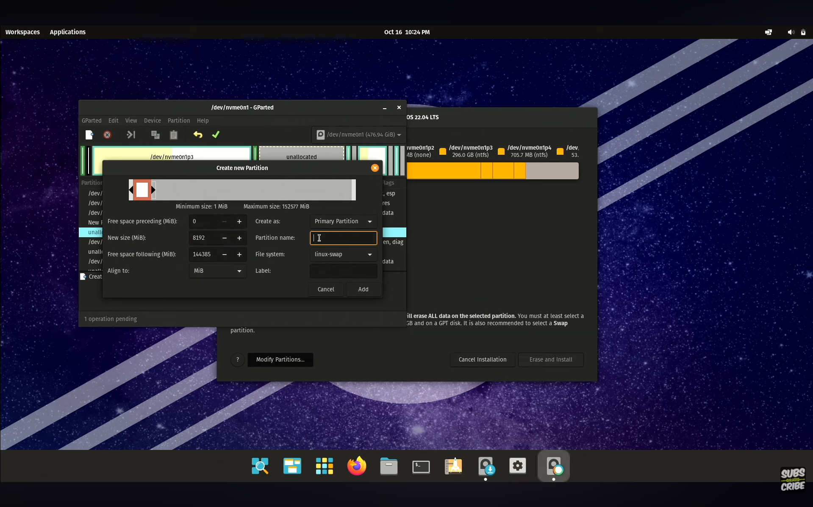
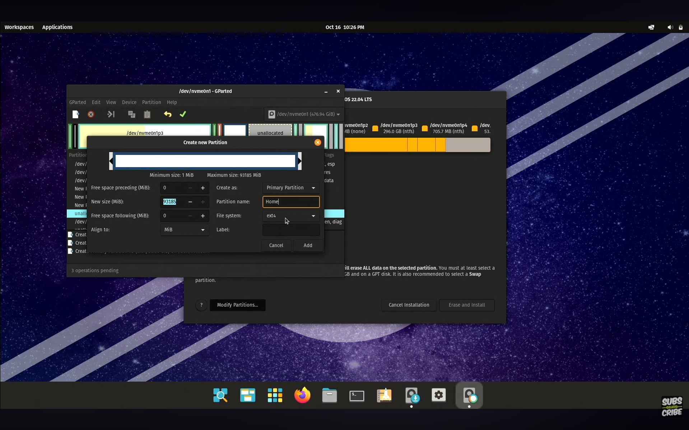

Langkah Instalasi Pop!_OS
Panduan Dual Boot berdampingan dengan Windows 11.
Pendahuluan
Panduan ini akan memandu Anda langkah demi langkah dalam menginstal Distro Linux Pop!_OS sebagai sistem operasi dual boot dengan Windows 11. Panduan ini berdasarkan video YouTube dari channel Levelup iD.
PENTING: Pastikan Anda sudah mencadangkan (backup) data penting Anda sebelum memulai!
1. Persiapan (Unduh Bahan)
Langkah pertama adalah mengunduh file ISO Pop!_OS dan aplikasi untuk membuat bootable USB drive.
1.1. Unduh Pop!_OS
- Kunjungi situs web resmi: pop.system76.com.
- Pilih versi yang sesuai dengan GPU Anda (pilih versi NVIDIA jika laptop menggunakan kartu grafis NVIDIA).
1.2. Unduh Balena Etcher
- Unduh dari situs resmi: balena.io/etcher.
2. Membuat Partisi Kosong di Windows
Buka Disk Management (Klik kanan Start Menu), pilih drive (C: atau D:), lalu klik kanan dan pilih "Shrink Volume".
Tentukan ukuran (misal 150000 MB untuk 150GB), lalu klik Shrink.
3. Membuat Bootable USB
Buka Balena Etcher, pilih file ISO, pilih Flashdisk target, lalu klik Flash.
4. Masuk BIOS & Boot Priority
Restart PC, masuk ke BIOS (tekan F2/F12/Del), lalu atur Boot Priority agar USB berada di urutan pertama.
5. Proses Instalasi Pop!_OS
Saat instalasi berjalan, pilih bahasa. Pada menu "How would you like to install?", pilih "Custom (Advanced)".
Konfigurasi Partisi (Wajib):
-
Partisi EFI (Boot): 1GB (FAT32) -> Boot / EFI System Partition
-
Partisi Swap: 4GB - 8GB -> Linux Swap
 -
Partisi Root (/): 30GB - 50GB -> Ext4 (Root)
-
Partisi Home (/home): Sisa Ruang -> Ext4 (Home)

6. Pengaturan Dual Boot (GRUB)
Setelah instalasi selesai dan masuk ke Pop!_OS, buka Terminal dan jalankan perintah ini untuk memunculkan menu Windows:
sudo apt update
sudo apt install os-prober
sudo os-prober
sudo update-grub
sudo add-apt-repository ppa:danielrichter2007/grub-customizer
sudo apt update
sudo apt install grub-customizerBuka aplikasi Grub Customizer, atur waktu tunggu, dan simpan.
Restart dan nikmati Dual Boot Anda!
Selamat! Instalasi Berhasil.
Anda telah berhasil menginstal Pop!_OS berdampingan dengan Windows 11.